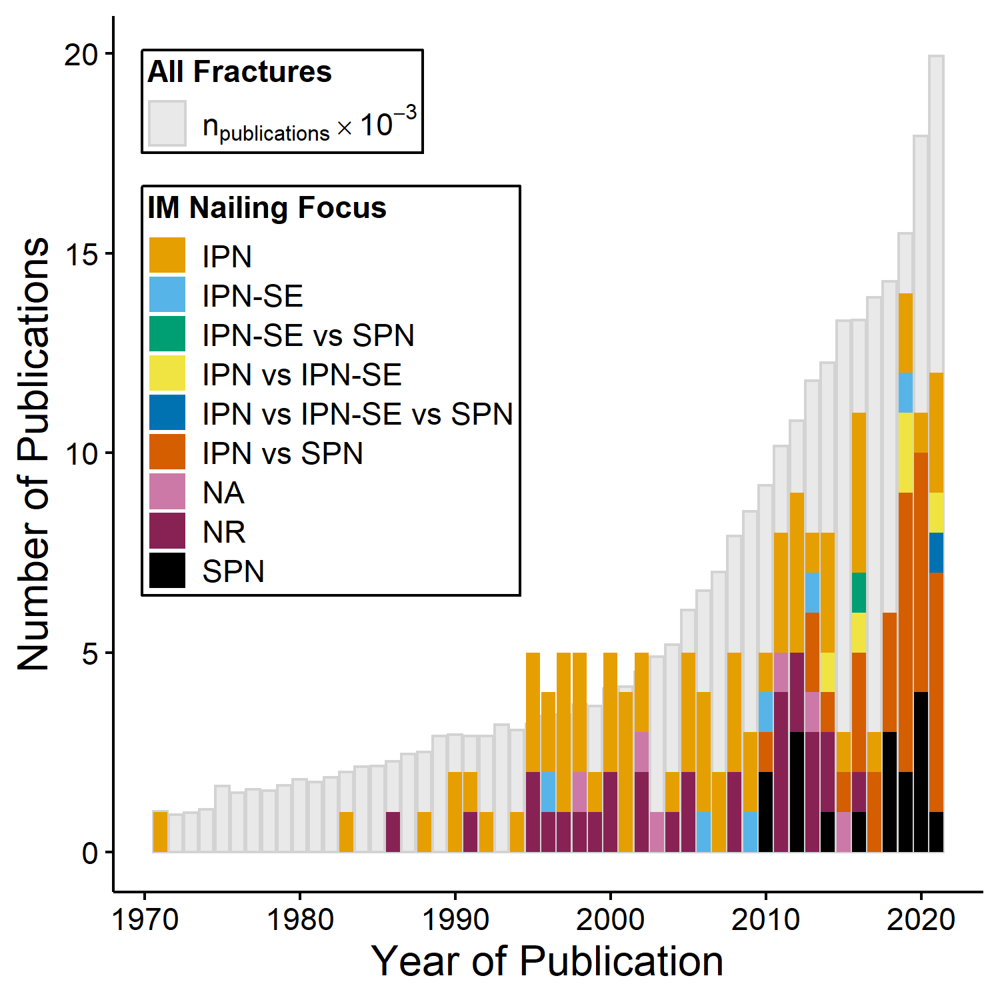
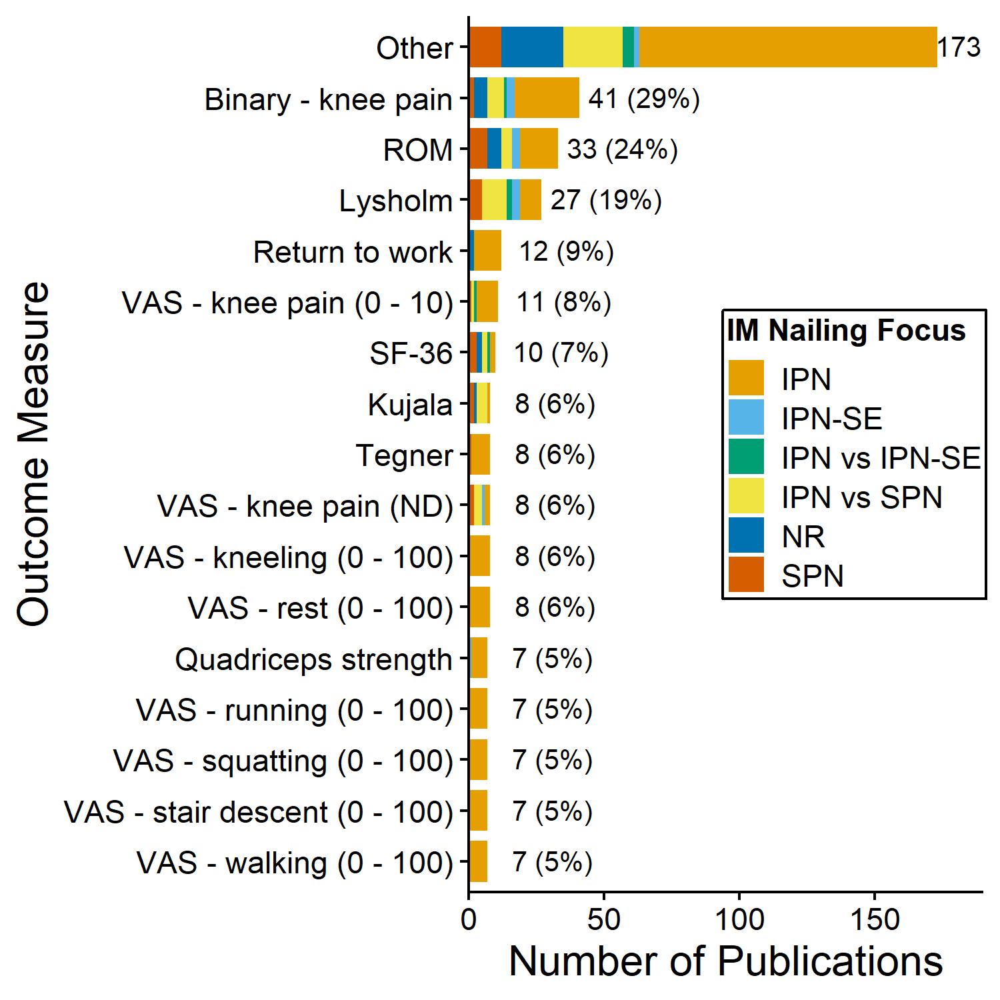
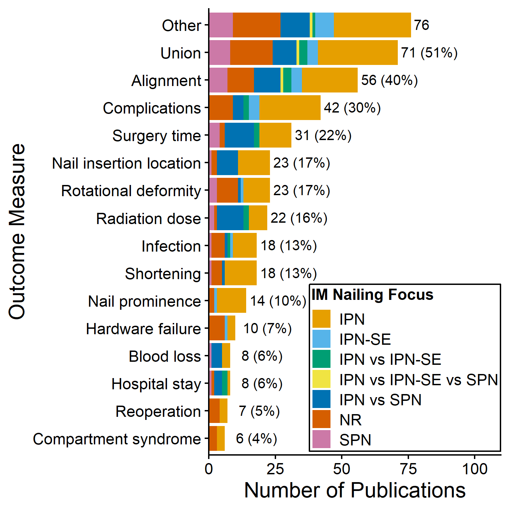
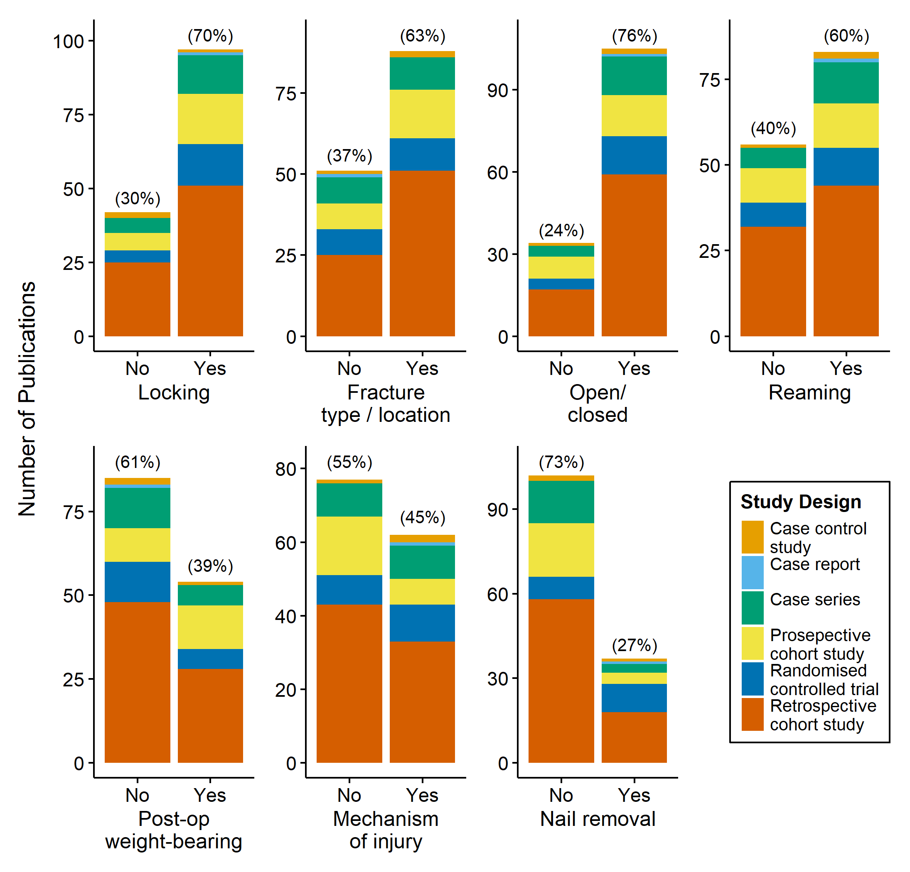
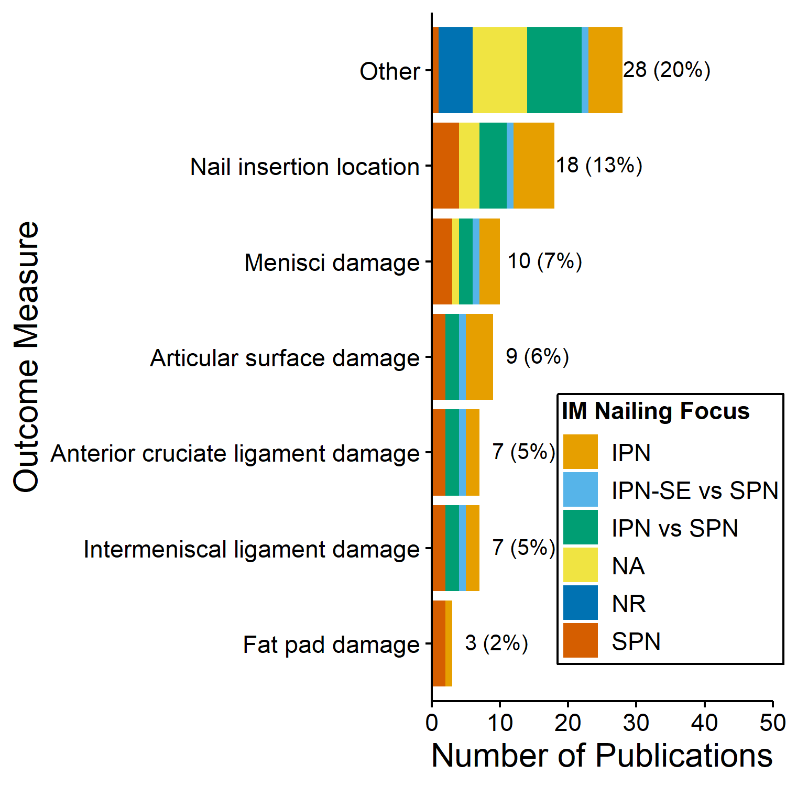

Intramedullary nailing of tibial shaft fractures: a scoping review
Simon Thwaites 1, 
simon.thwaites@adelaide.edu.au
John Abrahams2 Dominic Thewlis1, 2 Mark Rickman1, 2
1 Centre for Orthopaedic and Trauma Research, Adelaide Medical School, The University of Adelaide, Adelaide, Australia
2 Department of Orthopaedics and Trauma, Royal Adelaide Hospital, Adelaide, Australia
Introduction
Intramedullary (IM) nailing is the typical fixation for adult tibial shaft fractures, the most common long bone fracture [1]. Techniques to perform IM nailing vary, and studies comparing approaches show conflicting results. The absence of a validated, cohort-specific outcome measure has led to a wide range of outcome measures reported, making comparisons difficult. The true extent and prevalence of outcome measures in use is currently not known.
Aims
- Summarise the outcome tools reported in the assessment of tibial shaft fractures treated with IM nailing.
- Provide insight into the extent, range, and nature of the publications.
Methods
PubMed and Embase databases were searched in November 2021. Covidence™ was used for article screening and data extraction. All study designs and populations were included. Ex vivo studies without the presence of tibial shaft fracture were included; studies reporting on open or intra-articular fractures only, or other fracture fixation were excluded. The methodology followed current scoping review guidelines [2, 3].
Results
- 433 articles were identified:
- 165 papers included for data extraction (Figure 1),
- 137 in vivo studies, 26 ex vivo studies, two papers included both study types,
- 47% of papers were published within the last decade (Figure 2):
- 27 different countries of origin, most (35%) were from the USA. (supplementary material)

Figure 1: PRISMA flowchart.
| Approach | nfracs | % | ntibias | % | Total | % |
|---|---|---|---|---|---|---|
| IPN | 6147 | 48.8 | 199 | 54.5 | 6346 | 49 |
| SE | 432 | 3.4 | – | – | 432 | 3.3 |
| SPN | 1869 | 14.8 | 110 | 30.1 | 1979 | 15.3 |
| ND | 4141 | 32.9 | 56 | 15.3 | 4197 | 32.4 |
| Totals | 12589 | 100 | 365 | 100 | 12954 | 100 |

Figure 2: Number of publications per year grouped by IM nailing focus.

Figure 3: Patient outcomes for in vivo studies grouped by IM nailing focus. See supplementary material for full list of patient outcomes.

Figure 4: Clinical outcomes for in vivo studies grouped by IM nailing focus. See supplementary material for full list of clinical outcomes.

Figure 5: Ditribution of papers describing important study characteristics.
In Vivo Studies
- 12,589 fractures reported (Table 1):
- 33% of fractures did not describe the nailing approach,
- medial parapatellar IPN approach was most common (21%).
- 126 unique patient outcomes (Figure 3):
- A binary (yes/no) assessment of knee pain was most common (29%),
- VAS and NRS scores accounted for 46% of all unique patient outcomes.
- 69 unique clinical outcomes (Figure 4):
- fracture union was most common (51%).
- Most studies did not describe:
- post-operative weight-bearing regime (61%), or
- the mechanisms of injury (55%) (Figure 5).
- Most frequent follow-up times were 6 and 12 months (22% each). (supplementary material)
- 47% of studies level were III evidence. (supplementary material)

Figure 6: Outcomes for ex vivo studies grouped by IM nailing focus. See supplementary material for full list of outcomes.
Ex Vivo Studies
Conclusion
This is the first study to review and chart the outcome measures used in the assessment of tibial shaft fractures treated with IM nailing. Notably, a number of the scores routinely used are designed for other pathologies and do not contain a kneeling component, shown to cause the most severe pain within this cohort [4], and the most frequent modality is simply asking whether any knee pain exists. Currently, no conclusive evidence exists to inform surgical decision making on whether an optimal IM nailing technique exists. This work highlights the need for a validated outcome measure designed specifically for this cohort.
Acronyms
IM – intramedullary; IPN – infrapatellar nail; SE – Semi-extended; SPN – suprapatellar nail; ND – no description; NA – not applicable; ROM – range of motion; VAS – visual analogue score; NRS – numerical rating score.
More Information
Simply scan the QR code to find out more.
References
1. Courtney PM, Bernstein J, Ahn J. In brief: Closed tibial shaft fractures. Clinical orthopaedics and related research. 2011;469:3518–21.
2. Tricco AC, Lillie E, Zarin W, O’Brien KK, Colquhoun H, Levac D, et al. PRISMA extension for scoping reviews (PRISMA-ScR): Checklist and explanation. Annals of internal medicine. 2018;169:467–73.
3. Arksey H, O’Malley L. Scoping studies: Towards a methodological framework. International journal of social research methodology. 2005;8:19–32.
4. Song SY, Chang HG, Byun JC, Kim TY. Anterior knee pain after tibial intramedullary nailing using a medial paratendinous approach. Journal of orthopaedic trauma. 2012;26:172–7.